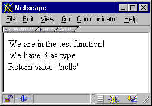

章 38. Calling User Functions
You can call user functions from your own modules, which is very handy when implementing callbacks; for example, for array walking, searching, or simply for event-based programs.
User functions can be called with the function call_user_function_ex(). It requires a hash value for the function table you want to access, a pointer to an object (if you want to call a method), the function name, return value, number of arguments, argument array, and a flag indicating whether you want to perform zval separation.
ZEND_API int call_user_function_ex(HashTable *function_table, zval *object, zval *function_name, zval **retval_ptr_ptr, int param_count, zval **params[], int no_separation); |
Note that you don't have to specify both function_table and object; either will do. If you want to call a method, you have to supply the object that contains this method, in which case call_user_function()automatically sets the function table to this object's function table. Otherwise, you only need to specify function_table and can set object to NULL.
Usually, the default function table is the "root" function table containing all function entries. This function table is part of the compiler globals and can be accessed using the macro CG. To introduce the compiler globals to your function, call the macro TSRMLS_FETCH once.
The function name is specified in a zval container. This might be a bit surprising at first, but is quite a logical step, since most of the time you'll accept function names as parameters from calling functions within your script, which in turn are contained in zval containers again. Thus, you only have to pass your arguments through to this function. This zval must be of type IS_STRING.
The next argument consists of a pointer to the return value. You don't have to allocate memory for this container; the function will do so by itself. However, you have to destroy this container (using zval_dtor()) afterward!
Next is the parameter count as integer and an array containing all necessary parameters. The last argument specifies whether the function should perform zval separation - this should always be set to 0. If set to 1, the function consumes less memory but fails if any of the parameters need separation.
例子 38-1 shows a small demonstration of calling a user function. The code calls a function that's supplied to it as argument and directly passes this function's return value through as its own return value. Note the use of the constructor and destructor calls at the end - it might not be necessary to do it this way here (since they should be separate values, the assignment might be safe), but this is bulletproof.
<?php
dl("call_userland.so");
function test_function()
{
print("We are in the test function!<br>");
return("hello");
}
$return_value = call_userland("test_function");
print("Return value: \"$return_value\"<br>");
?> |
